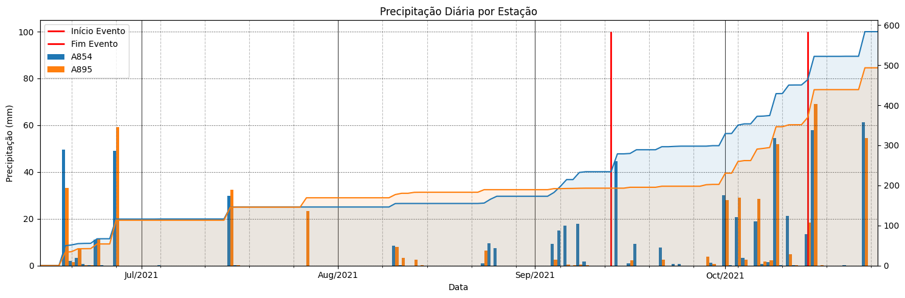
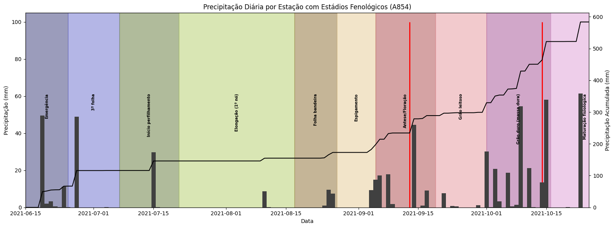
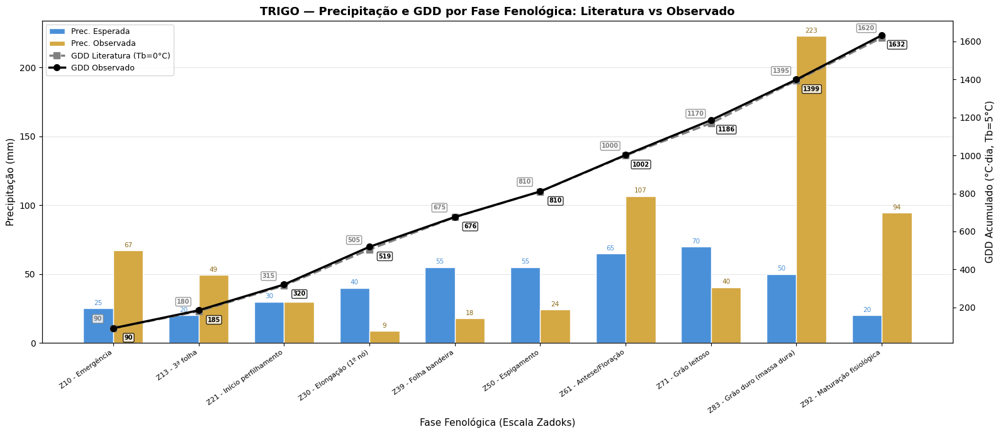

Aula prática 3 — chuva excessiva em trigo: % do ciclo e GDD
A terceira aula prática reaproveita o pipeline da Aula prática 2 — Sicor + INMET: plausibilidade espacial e GDD da soja para um evento e cultura diferentes: Chuva excessiva em trigo. Mudamos três coisas:
o filtro do evento (
nome_evento == 'Chuva excessiva') e da cultura (produto == 'trigo');o cálculo agora destaca a fração da chuva do evento sobre o total da safra e a máxima chuva diária;
os parâmetros do GDD são os do trigo (\(T_b = 5\,^\circ\!C\), \(T_M = 26\,^\circ\!C\), fases Zadoks).
Objetivo
Estabelecer um segundo case para o fluxo COP → estação INMET próxima → análise meteorológica, agora com foco em excesso hídrico e fenologia do trigo.
Pré-requisitos
Concluir Aula prática 2 — Sicor + INMET: plausibilidade espacial e GDD da soja (carrega Sicor, normaliza coordenadas,
constrói contagem_filtrada e o catálogo INMET).
Passo 1 — filtrar trigo + chuva excessiva
A partir do df_sicor já limpo da aula anterior:
azarados_chuva = df_sicor[
(df_sicor['produto'] == 'trigo') &
(df_sicor['nome_evento'] == 'Chuva excessiva')
]
azarados_chuva = (
azarados_chuva
.groupby(['longitude_centroide', 'latitude_centroide'])['dt_comunicacao']
.nunique()
.reset_index(name='contagem')
.sort_values('contagem', ascending=False)
)
Passo 2 — mapa exploratório no Folium
Plot rápido para confirmar que os pontos estão no Sul (onde o trigo brasileiro se concentra):
import folium
center_lat = azarados_chuva['latitude_centroide'].mean()
center_lon = azarados_chuva['longitude_centroide'].mean()
m = folium.Map(location=[center_lat, center_lon], zoom_start=6)
dados = azarados_chuva[azarados_chuva['contagem'] >= 2]
for _, row in dados.iterrows():
folium.CircleMarker(
location=[row['latitude_centroide'], row['longitude_centroide']],
radius=row['contagem'],
fill=True, fill_opacity=0.3,
).add_to(m)
Para o caso de estudo, escolhemos o top 1 (maior contagem):
top_azarado = azarados_chuva.iloc[0]
lat, lon = top_azarado['latitude_centroide'], top_azarado['longitude_centroide']
E sobrepomos com uma camada de satélite Esri para ver a paisagem agrícola:
m = folium.Map(
location=[lat, lon], zoom_start=8,
tiles=('https://server.arcgisonline.com/ArcGIS/rest/services/'
'World_Imagery/MapServer/tile/{z}/{y}/{x}'),
attr='Esri',
)
folium.Marker([lat, lon], popup='Local COP recorrente').add_to(m)
m
Passo 3 — top 3 estações INMET (Haversine)
A função haversine da Aula prática 2 — Sicor + INMET: plausibilidade espacial e GDD da soja é reaproveitada:
inmet_coords = pd.read_csv(
'coordenadas-inmet.csv',
header=0, names=['cod', 'latitude', 'longitude'],
)
inmet_coords['estacoes_proximas'] = inmet_coords.apply(
lambda row: haversine(lat, lon, row['latitude'], row['longitude']),
axis=1,
)
top3 = inmet_coords.nsmallest(3, 'estacoes_proximas')
E carregamos os CSVs com o mesmo loop + padronização de colunas da
aula anterior, produzindo df_all e df_prec:
df_prec = df_all.pivot_table(
index=df_all.index, columns='COD', values='PREC',
)
Passo 4 — recortar a safra e calcular acumulados
Pegamos o primeiro registro da gleba e recortamos a série de precipitação no ciclo:
df_azarado = df[(df['latitude_centroide'] == lat) &
(df['longitude_centroide'] == lon)]
evento = df_azarado.iloc[0]
dt_plantio = evento['dt_inicio_plantio']
dt_colheita = evento['dt_fim_colheita']
dt_inicio_evento = evento['dt_inicio_evento']
dt_fim_evento = evento['dt_fim_evento']
df_prec = df_prec[dt_plantio:dt_colheita]
Três métricas operacionais para a alegação de excesso:
chuva_safra = df_prec.sum()
chuva_evento = df_prec[dt_inicio_evento:dt_fim_evento].sum()
# % do total da safra que caiu no período do evento
pct = chuva_evento / chuva_safra * 100
Dica
Para uma alegação de Chuva excessiva ganhar plausibilidade, esperamos um percentual elevado da safra concentrado em poucos dias do evento. Valores < 10–15% em janelas curtas indicam que o “evento” pode ter sido apenas chuva normal.
E a duração do evento e da safra:
import datetime as dt
dur_evento = (dt.datetime.strptime(dt_fim_evento, '%Y-%m-%d')
- dt.datetime.strptime(dt_inicio_evento, '%Y-%m-%d'))
dur_safra = (dt.datetime.strptime(dt_colheita, '%Y-%m-%d')
- dt.datetime.strptime(dt_plantio, '%Y-%m-%d'))
Passo 5 — pico diário por estação
Reamostragem horária → diária e máximo da janela:
df_prec_diario = df_prec.groupby(df_prec.index.date).sum()
# Máxima diária por estação e sua data
for stn in df_prec_diario.columns:
imax = df_prec_diario[stn].idxmax()
vmax = df_prec_diario[stn].max()
print(f'{stn} → {vmax:.1f} mm em {imax}')
Visualizando as duas estações válidas em barras paralelas com
matplotlib.dates:

Figura 8 - Precipitação diária nas duas estações INMET válidas do top 3. A barra de cada estação fica deslocada de meio dia para evitar sobreposição visual.
Passo 6 — GDD com os parâmetros do trigo (Zadoks)
Reaproveitamos graus_dia_acumulado da Aula prática 2 — Sicor + INMET: plausibilidade espacial e GDD da soja,
mas trocamos as constantes e as fases:
🖼️ Imagem sugerida (IMG-TODO)
- Imagem ideal:
Esquema da escala de Zadoks para o trigo, mostrando as principais fases (emergência, perfilhamento, elongação, espigamento, floração, enchimento de grão) com a planta correspondente a cada código (Z10–Z92).
- Função:
traduz visualmente os códigos Zadoks usados no cálculo de graus-dia, facilitando a leitura das fases no texto e no código.
- Busca sugerida:
“Zadoks growth scale wheat diagram”; “escala de Zadoks trigo estádios fenológicos”
- Fonte provável:
Wikimedia Commons, GRDC / serviços de extensão agrícola
- Facilidade:
alta
TB = 5 # Temperatura base do trigo
TM = 26 # Teto fisiológico
fases_gdd = {
'Z10 - Emergência': 140,
'Z13 - 3ª folha': 240,
'Z21 - Início perfilhamento': 400,
'Z30 - Elongação (1º nó)': 640,
'Z39 - Folha bandeira', 820,
'Z55 - Espigamento': 1020,
'Z65 - Floração': 1200,
'Z75 - Grão leitoso': 1400,
'Z85 - Grão duro': 1620,
'Z92 - Maturidade': 1900,
}
prec_esperada = {
'Z10 - Emergência': 25,
'Z13 - 3ª folha': 20,
'Z21 - Início perfilhamento': 30,
'Z30 - Elongação (1º nó)': 40,
# … (~350–450 mm em todo o ciclo)
}
Identificamos em que fase estava o trigo no meio do evento:
dti = dt.datetime.strptime(dt_inicio_evento, '%Y-%m-%d')
dtf = dt.datetime.strptime(dt_fim_evento, '%Y-%m-%d')
dt_meio = dti + (dtf - dti) / 2
df_fases[(df_fases['data_inicio'] <= dt_meio) &
(df_fases['data_fim'] >= dt_meio)]
Passo 7 — gráfico integrado precipitação + GDD + fases
O gráfico final do notebook superpõe:
barras diárias de precipitação,
linhas de GDD acumulado (literatura × observado),
faixas verticais coloridas demarcando cada fase Zadoks,
uma marcação do intervalo do evento.

Figura 9 - Acumulado diário com as fases fenológicas do trigo (Zadoks) destacadas. A coluna do evento é evidente nas barras mais altas.
E a versão literatura × observado:

Figura 10 - Comparação literatura × observado por fase Zadoks. Excedentes nas fases Z65–Z75 (floração e grão leitoso) configuram o quadro típico de germinação na espiga em trigo.
Discussão
Trigo tem demanda hídrica total de ~350–450 mm — muito menor que a da soja. Isso muda dois comportamentos diagnósticos:
a fração
chuva_evento / chuva_safratende a ser maior para o mesmo volume absoluto de chuva;eventos de excesso hídrico em Z65 (floração) e Z75 (grão leitoso) geram impactos qualitativos (germinação na espiga, PHS) que não aparecem em soja.
Próximos passos
Aula 2 — plausibilidade meteorológica: chuva excessiva em trigo — versão completa multi-estação com fallback para grade MERGE quando a estação INMET tem falhas.
Tipos de eventos adversos no campo — definição e mecanismos do evento “Chuva excessiva”.